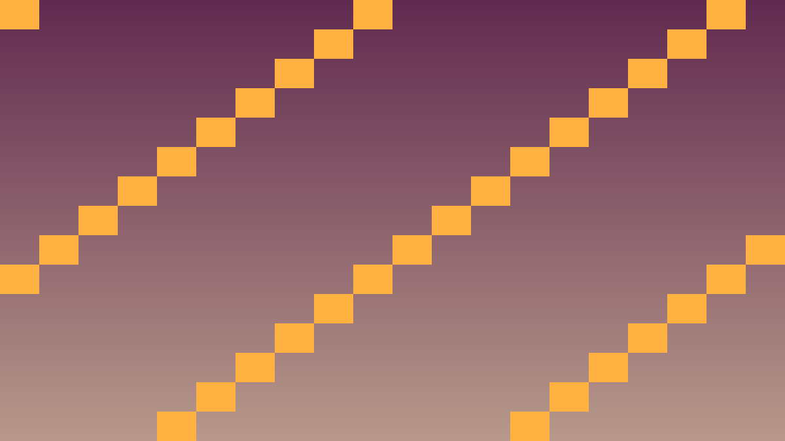
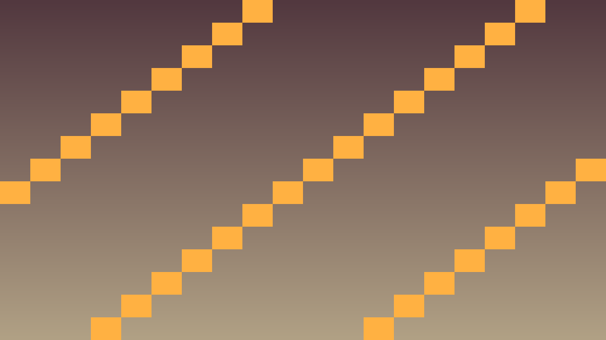

Tavs šīs stundas izaicinājums: Izveidot Pong spēles laukuma vizuālo izkārtojumu un sagatavot to spēles loģikai.
Pirms sāc: izmanto iepriekš apgūto un šīs lapas teorijas/koda piemērus. Ja vajadzīga jauna komanda vai rīks, vispirms atrodi tās paraugu teorijas sadaļā.
Godot 2D koordinātes sākas kreisajā augšējā stūrī: (0, 0). X pieaug pa labi, Y uz leju. Tas nozīmē, ka Pong laukuma centrs 1280×720 logā ir (640, 360), augšējā siena ir pie mazas Y vērtības, bet apakšējā siena ir pie lielas Y vērtības.
Spēles laukuma izveidē svarīgi nodalīt vizuālo slāni, sadursmju slāni un UI slāni. Vizuālie objekti parāda spēli, sadursmju objekti nosaka fizikas robežas, bet UI elementi, piemēram, Label, rāda punktus. Vēlāk C++ kods atsauksies uz šiem elementiem pēc nosaukuma.
// Pozīciju manipulācija C++
Vector2 pos = get_position();
pos.x += 10; // pa labi par 10 pikseļiem
pos.y -= 5; // uz augšu par 5 pikseļiem
set_position(pos);
set_position(Vector2(640, 360)); // ekrāna centrs 1280x720Transform = Position + Rotation + Scale. Bērnu nodes pārmanto vecāku transform.
Viewport (Skatlogs) ir loga apgabals, kurā renderē scēnu. Standarta Pong izmērs šajā tēmā ir 1280×720. Lai spēle uz dažādiem ekrāniem uzvestos paredzami, Project Settings sadaļā jāiestata gan loga izmērs, gan stretch režīms.
#include <godot_cpp/classes/label.hpp>
#include <godot_cpp/variant/string.hpp>
using namespace godot;
void GameHud::set_score(int left, int right) {
get_node<Label>("ScoreLeft")->set_text(String::num_int64(left));
get_node<Label>("ScoreRight")->set_text(String::num_int64(right));
}Šis ir īss iesildīšanās uzdevums. Nokopē sagatavi, ielīmē to pareizajā koda vietā un palaid. Šeit pietiek droši izmēģināt tēmu 1.5 Spēles laukuma izveide; detalizētu izpratni veidosi nākamajos uzdevumos.
Kopējamais piemērs vai sagatave: izmanto šo bloku kā starta punktu, nevis kā gala risinājumu.
#include <godot_cpp/classes/label.hpp>
#include <godot_cpp/variant/string.hpp>
using namespace godot;
void GameHud::set_score(int left, int right) {
get_node<Label>("ScoreLeft")->set_text(String::num_int64(left));
get_node<Label>("ScoreRight")->set_text(String::num_int64(right));
}.cpp vai .hpp failā pie šīs stundas klases.Pievieno šīs stundas paņēmienu kā nelielu, strādājošu spēles mehānikas daļu.
PlayerState, velocity, score vai update_ui()._ready(), _process(), _physics_process(), signāla apstrādātāja vai projekta palīgklases.Pārbaudi, vai C++ algoritms darbojas paredzami spēles vidē.
Ja pamatdarbs ir pabeigts, paplašini spēli ar vienu nelielu C++ uzlabojumu.
Noslīpē laukuma lasāmību.
ScoreLeft un ScoreRight nav bērni zem kustīgiem objektiem.current = true kodā.

#include <godot_cpp/classes/camera2d.hpp>
#include <godot_cpp/classes/label.hpp>
#include <godot_cpp/classes/line2d.hpp>
#include <godot_cpp/variant/packed_vector2_array.hpp>
#include <godot_cpp/variant/string.hpp>
#include <godot_cpp/variant/vector2.hpp>
using namespace godot;
void CourtSetup::_ready() {
get_node<Label>("ScoreLeft")->set_text(String::num_int64(0));
get_node<Label>("ScoreRight")->set_text(String::num_int64(0));
Line2D *center_line = get_node<Line2D>("CenterLine");
PackedVector2Array points;
points.push_back(Vector2(640, 0));
points.push_back(Vector2(640, 720));
center_line->set_points(points);
center_line->set_width(4.0);
Camera2D *camera = get_node<Camera2D>("Camera2D");
camera->set_position(Vector2(640, 360));
camera->make_current();
}